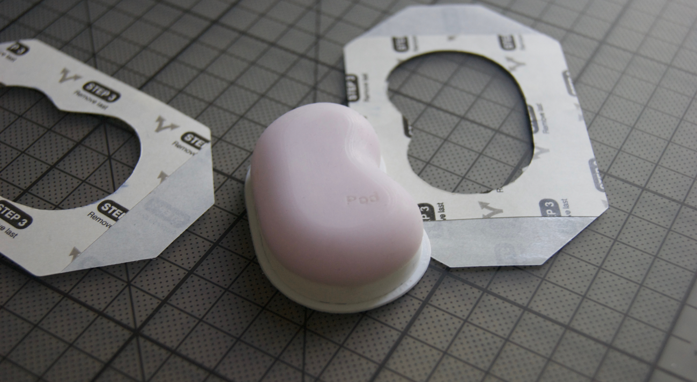
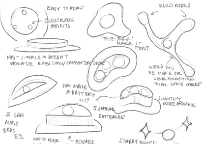
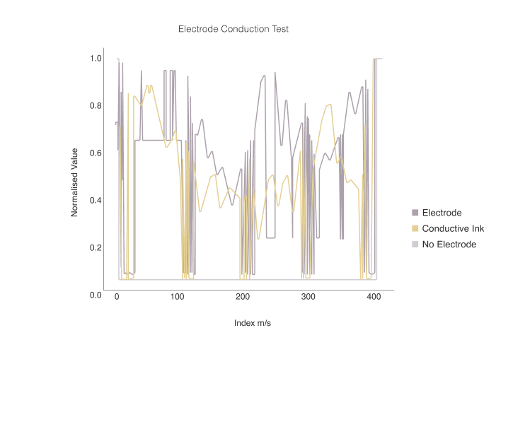
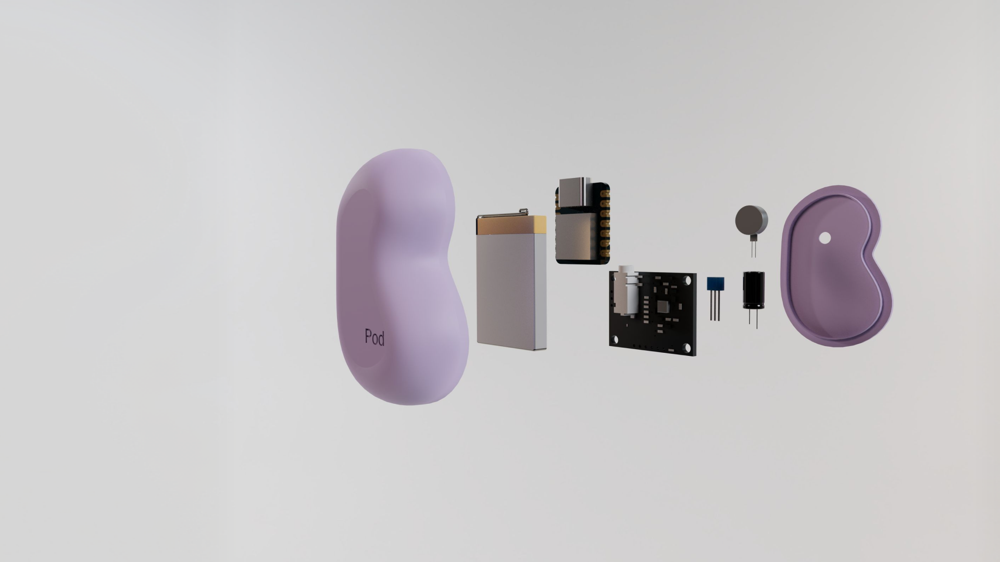
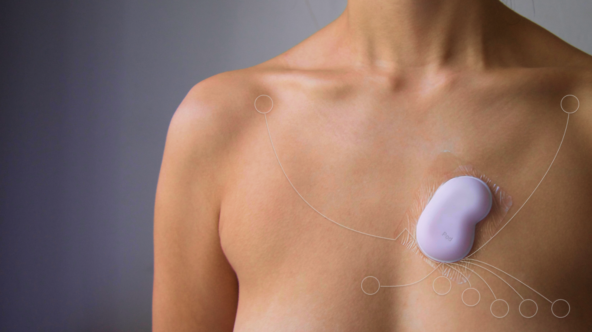

Monitoring Symptoms of Chronic Fatigue Syndrome
Pod is a medical device using ECG technology to help track chronic fatigue syndrome. By using novel electrode "tattoos," Pod generates continuous medical-grade readings with minimal discomfort to the user.
Chronic Fatigue Syndrome (CFS) is a disease that can stop people from carrying out basic functions due to extreme exhaustion. Tracking symptoms is key in battling CFS, but current methods are tiring and inaccurate.
Prototyping was split into making a works-like and looks-like prototype separately. The looks-like was guided by the works-like, considering size and dimensions, how it fit on the body, and using medically safe materials such as silicone and skin tapes.
The physical prototype was worn to stress-test the design and ensure it could be worn for days at a time. Surprisingly, it even held up in the shower!


The process of ECG placement was studied and showed that electrodes are placed relative to a point on the chest. This is reflected in the design with the central notch.
Dr. James Gill, 2019 (How to perform an ECG)
To make the electrode "tattoo" possible, it was hypothesised that conductive ink could be used as electrode material. Using this material means the leads could have a fixed shape that was flexible to the body.
A 3-point ECG was created using Arduino, and the results from a normal electrode, an electrode with conductive ink, and a control without leads at all were recorded. The test showed first signs of proof of concept.


